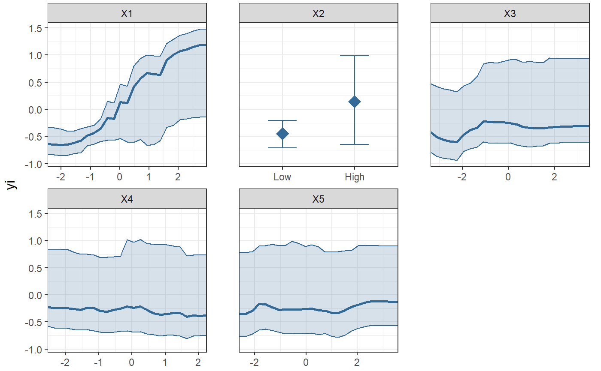

PartialDependence.RdPartial dependence plots
PartialDependence(x, vars = NULL, pi = NULL, rawdata = FALSE, bw = FALSE, resolution = NULL, moderator = NULL, mod_levels = NULL, output = "plot", ...)
| x | Model object. |
|---|---|
| vars | Character vector containing the moderator names for which to plot partial dependence plots. If empty, all moderators are plotted. |
| pi | Numeric (0-1). What percentile interval should be plotted for the
partial dependence predictions? Defaults to NULL. To obtain a 95% interval,
set to |
| rawdata | Logical, indicating whether to plot weighted raw data.
Defaults to FALSE. Uses the same weights as the model object passed to the
|
| bw | Logical, indicating whether the plot should be black and white, or color. |
| resolution | Integer vector of length two, giving the resolution of the partial predictions. The first element indicates the resolution of the partial predictions; for Monte-Carlo integration, the second element gives the number of rows of the data to be sampled without replacement when averaging over values of the other predictors. |
| moderator | Atomic character vector, referencing the name of one
variable in the model. Results in partial prediction plots, conditional on
the moderator. If |
| mod_levels | Vector. If |
| output | Character. What type of output should be returned? Defaults to
|
| ... | Additional arguments to be passed to |
A gtable object.
Plots partial dependence plots (predicted effect size as a function of the
value of each predictor variable) for a MetaForest- or rma model object. For
rma models, it is advisable to mean-center numeric predictors, and to not
include plot_int effects, except when the rma model is bivariate, and the
plot_int argument is set to TRUE.
# Partial dependence plot for MetaForest() model: set.seed(42) data <- SimulateSMD(k_train = 200, model = es * x[, 1] + es * x[, 2] + es * x[, 1] * x[, 2])$training data$X2 <- cut(data$X2, breaks = 2, labels = c("Low", "High")) mf.random <- MetaForest(formula = yi ~ ., data = data, whichweights = "random", method = "DL", tau2 = 0.2450) # Examine univariate partial dependence plot for all variables in the model: PartialDependence(mf.random, pi = .8)if (FALSE) { # Examine bivariate partial dependence plot the plot_int between X1 and X2: pd.plot <- PartialDependence(mf.random, vars = c("X1", "X2"), plot_int = TRUE) # Save to pdf file pdf("pd_plot.pdf") grid.draw(pd.plot) dev.off() # Partial dependence plot for metafor rma() model: dat <- escalc(measure="RR", ai=tpos, bi=tneg, ci=cpos, di=cneg, data=dat.bcg) dat$yi <- as.numeric(dat$yi) dat$alloc <- factor(dat$alloc) dat$ablat_d <- cut(dat$ablat, breaks = 2, labels = c("low", "high")) # Demonstrate partial dependence plot for a bivariate plot_int rma.model.int <- rma(yi, vi, mods=cbind(ablat, tpos), data=dat, method="REML") PartialDependence(rma.model.int, rawdata = TRUE, pi = .95, plot_int = TRUE) # Compare partial dependence for metaforest and rma dat2 <- dat dat2[3:7] <- lapply(dat2[3:7], function(x){as.numeric(scale(x, scale = FALSE))}) mf.model.all <- MetaForest(yi ~ ., dat2[, c(3:11)]) rma.model.all <- rma(dat$yi, dat2$vi, mods = model.matrix(yi~., dat2[, c(3:10)])[, -1], method="REML") PartialDependence(mf.model.all, rawdata = TRUE, pi = .95) PartialDependence(rma.model.all, rawdata = TRUE, pi = .95) }